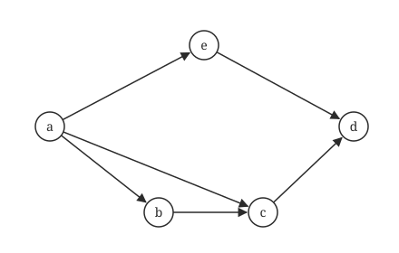
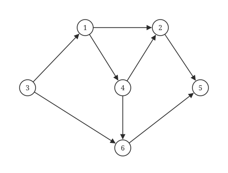
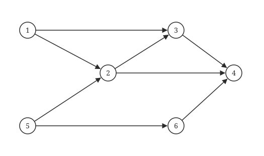
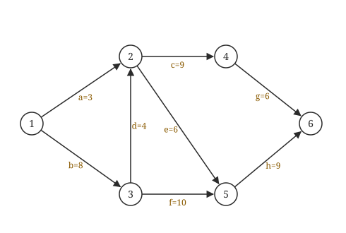
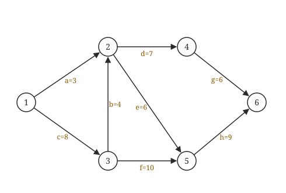

拓扑排序与关键路径
这一话短但实用：有向无环图（DAG）上的两个算法。拓扑排序判先后，关键路径算工期。真题的 AOE 题可以直接填表解决。
01拓扑排序
AOV 网：顶点表示活动，有向边表示先后。拓扑序列就是一个合法的执行次序。
| 顶点 | a | b | c | d | e |
|---|---|---|---|---|---|
| 入度 | — | 1 | 1 | 2 | 1 |
| 顶点 | a | b | c | d | e |
|---|---|---|---|---|---|
| 入度 | — | — | 0 | 2 | 1 |
| 顶点 | a | b | c | d | e |
|---|---|---|---|---|---|
| 入度 | — | — | — | 1 | 1 |
| 顶点 | a | b | c | d | e |
|---|---|---|---|---|---|
| 入度 | — | — | — | — | 1 |
| 顶点 | a | b | c | d | e |
|---|---|---|---|---|---|
| 入度 | — | — | — | — | — |
拓扑排序三句话
算法：不断删入度为 0 的顶点，用栈或队列暂存。
判环：输出顶点数 < n ⟹ 有环。
时间：邻接表 O(n+e)，邻接矩阵 O(n²)。
唯一性：每一轮入度为 0 的顶点恰好一个 ⟺ 拓扑序列唯一。
矩阵和拓扑序的关系
邻接矩阵是上三角（主对角线以下全 0）⟹ 存在拓扑序（就是 1,2,…,n），但不一定唯一。 拓扑序按顶点重新编号之后，邻接矩阵就一定是上三角。
再深一层
· 存在性 ✓：主对角线以下全 0 ⟹ 只有 A[i][j]（i < j）可能非 0 ⟹ 所有弧都从小编号指向大编号 ⟹ 沿任何一条路径编号只增不减，绝无可能绕回来 ⟹ 无环 ⟹ 拓扑序列必然存在，而且 1,2,…,n 这个自然顺序本身就是一个合法拓扑序。
· 唯一性 ✗：书上的三阶反例 [[0,1,1],[0,0,0],[0,0,0]]（即 1→2、1→3）—— 输出 1 之后 2 和 3 的入度同时为 0 ⟹ 两个合法序列 1,2,3 与 1,3,2 ⟹ 不唯一。
⟹ 只能说"存在，可能不唯一"（A、B 都把话说死了，D 连存在性都不敢下结论）。
📌 与第 19 题合起来记这条双向结论：
邻接矩阵是三角阵（主对角线全 0）⟹ 图是 DAG ⟹ 拓扑序列存在（可能不唯一）；
反之，存在拓扑序列的图不一定长成三角阵，但总可以通过给顶点重新编号把它变成三角阵（按拓扑序编号即可）。
⚠️ "以下"还是"以上"不影响结论：主对角线以上全 0 就是所有弧从大编号指向小编号，把编号倒过来看是一模一样的情形，同样存在拓扑序列。408 在这个点上换过方向出题，别被"上/下"绕晕。

再深一层
先钉死两端：a 是唯一入度为 0 的顶点 ⟹ 必第一；d 是唯一出度为 0 的顶点 ⟹ 必最后。剩下 b、c、e 三个排中间，唯一的约束是 b 必须在 c 之前（b→c），而 e 与 b、c 都无关系。
⟹ 把 e 插进"b c"这条链的三个空位：ebc、bec、bce ⟹ 3 种，即 aebcd、abecd、abced。
📌 "数拓扑序个数"的通法（第 16 题同款）：① 钉死唯一源点/唯一汇点；② 找出剩余顶点之间的真实约束（只看直接弧即可，传递关系自动满足）；③ 把"自由顶点"往已排好的链里插空，用插空法数，比全排列筛选快得多。
⚠️ a→c 这条弧是"冗余弧"：a→b→c 已经蕴含 a 在 c 之前，删掉它答案仍是 3。命题人放这条弧是为了让图看起来更乱，别被吓住——数个数时只需盯"真正造成先后限制"的关系。
⚠️ 别把"拓扑序列个数"和"DFS/BFS 序列个数"混为一谈：拓扑序只要求"前驱在前"，不要求连通性上的深度或层次，所以像 aebcd 这种"跳着走"的序列完全合法。

再深一层
入度表：3:0 1:1(3) 4:1(1) 2:2(1,4) 6:2(3,4) 5:2(2,6)。
逐步删点：
· 入度 0 的只有 3 ⟹ 输出 3；删 3 后 1 的入度归 0（6 还欠 4）；
· 入度 0 的只有 1 ⟹ 输出 1；删 1 后 4 的入度归 0（2 还欠 4）；
· 入度 0 的只有 4 ⟹ 第三位必须是 4 ⟹ A、B 当场出局（它们第三位是 2，而 2 还欠着前驱 4）；
· 删 4 后 2 和 6 同时入度为 0 ⟹ 两种走法：3,1,4,2,6,5 与 3,1,4,6,2,5；
· 最后 5（欠 2 和 6）收尾。
⟹ 选项里只有 D（3,1,4,2,6,5）命中。C（3,1,4,2,5,6）错在 5 排在 6 前面——5 的前驱有 6，还没输出。
📌 判合法性最快的姿势：不要真的模拟删点，直接对每条弧检查"弧尾是否在弧头之前"。C 项只需看 6→5 这条弧就毙掉；A、B 只需看 4→2 就毙掉。四条弧检查完全部有结论，10 秒。
⚠️ 本题图里 4→6 这条弧最容易被漏看（它和 3→6 挤在一起）。漏了它，2 与 6 的先后就没了约束，A、B 也会被误判为合法。读有向图时按顶点逐个抄出弧表，比在图上"看"可靠得多。

再深一层
入度表：1:0 5:0 2:2(1,5) 3:2(1,2) 6:1(5) 4:3(2,3,6)。
入度为 0 的只有 1 和 5 ⟹ 它们必须占据序列的前两位（顺序任意）——因为除它们之外的每个顶点都至少欠着一个前驱，而那些前驱最终都追溯到 1 或 5。
· A：1,5,… ✓ B：5,1,… ✓ C：5,1,… ✓
· D：5,2,1,… ✗ —— 第二位是 2，可 2 的前驱之一是 1，而 1 排在它后面 ⟹ 违规。
📌 "哪个不是拓扑序"型题的三级筛法，从便宜到贵：
① 数入度为 0 的顶点，看前几位对不对（本题到此结束）；
② 挑多前驱的顶点，检查它的前驱是否都在它前面（第 17、32 题用这招）；
③ 实在不行才逐条弧检查。绝大多数真题在第 ① 步就能出答案。
⚠️ 验证一下其余三项确实合法（程序已跑）：A、B、C 都满足全部 8 条弧的先后要求。注意 6 和 3 的相对位置很自由（它们之间没有任何路径），所以 B（6 在 3 前）和 C（3 在 6 前）都对——别拿"编号要递增"这种不存在的直觉去卡。
再深一层
· 顶点账：初始化入度数组扫一遍 O(n)；每个顶点入栈一次、出栈一次、输出一次 ⟹ O(n)；
· 边账：每输出一个顶点就顺着它的边表把出边删一遍（给邻接点的入度 −1），全图每条弧恰好被处理一次 ⟹ O(e)；
⟹ 合计 O(n+e)。两项都不能省：e=0 时仍要 O(n)（一堆孤立点也得逐个输出），稠密时 e 可达 n²。
📌 存储结构决定复杂度，这一条在 408 里被反复换皮考：
邻接表：DFS / BFS / 拓扑排序 / 关键路径 全是 O(n+e)；
邻接矩阵：以上全是 O(n²)（因为"找某顶点的所有邻接点"必须扫一整行 n 次）。
看到"邻接表"就填 O(n+e)，看到"邻接矩阵"就填 O(n²)，几乎不用思考。
⚠️ 顺带记住表 6.5 里其余几个：Dijkstra O(n²)、Floyd O(n³)、Prim O(n²)、Kruskal O(e log e)。Prim 与顶点数挂钩（宜稠密图），Kruskal 与边数挂钩（宜稀疏图），这一对经常和本题一起出现在同一张选择题卷面上。
Ⅰ．回路是简单路径
Ⅱ．存储稀疏图，用邻接矩阵比邻接表更省空间
Ⅲ．若有向图中存在拓扑序列，则该图不存在回路
再深一层
· Ⅰ ✗：简单路径 = 顶点不重复的路径；回路（环）的首尾顶点相同 ⟹ 天然违反"不重复"。⚠️ 但要注意书上另一个概念："简单回路"是指除首尾外其余顶点不重复的回路——"回路是简单路径"仍然是错的。
· Ⅱ ✗：稀疏图（e 远小于 n²）该用邻接表：邻接表空间 O(n+e)，邻接矩阵恒为 O(n²) ⟹ 稀疏时矩阵里绝大多数是 0，纯浪费。稠密图才轮到邻接矩阵占优（省了指针域，且随机访问 O(1)）。
· Ⅲ ✓：存在拓扑序列 ⟺ 有向无环图。这是本节的地基，正反两个方向都成立：有环 ⟹ 环上顶点入度减不到 0 ⟹ 排不出；无环 ⟹ 每一步必存在入度为 0 的顶点 ⟹ 一定能排出。
📌 Ⅲ 的"必存在入度为 0 的顶点"这一步值得单独记：DAG 里若每个顶点入度都 ≥1，从任一点沿入边一直往回走，顶点有限必然重复 ⟹ 出现环 ⟹ 与无环矛盾。同样的抽屉式论证在 2025 真题第 47 题 C 项又考了一次（度 ≥2 的无向图必有回路）。
02DAG 描述表达式
相同的子表达式只画一次，顶点数就最少。
再深一层
先按二叉树画（会重复）：根是 *，左子树是 x+y，右子树是 /（左 x+y、右 x）⟹ 树上共 9 个结点（正是干扰项 D 的来历）。
再合并（变成 DAG）：
· 操作数去重：x 出现 3 次 ⟹ 合成 1 个；y 出现 1 次 ⟹ 1 个；
· 公共子表达式去重：x+y 出现 2 次，是完全相同的子树 ⟹ 合成 1 个 "+" 顶点，它被 * 和 / 两个父结点共享（入度为 2）；
· 剩下 / 和 * 各 1 个。
⟹ x、y、+、/、* 共 5 个顶点。边：+→x、+→y、/→(+)、/→x、*→(+)、*→(/)。
📌 两条规矩（书上明写）：① 表达式的 DAG 表示中不会出现重复的操作数顶点（相同变量必须共用）；② 相同的子表达式共用同一个运算符顶点。⚠️ 但"运算符相同"不等于"可合并"——必须整棵子树都相同才行（若表达式是 (x+y)*(x+z)，两个 + 就不能合并）。
⚠️ 本题最容易多算的是把两个 x+y 当成不同结点（得 6，选项 B）或忘记 x 要共享（得 8，选项 C）。做法：先老实画二叉树数出 9，再逐个合并、每合并一次减几个，比直接凑答案稳。
03关键路径
AOE 网：边是活动（带时间），顶点是事件。从源到汇的最长路径决定工期，这条路径叫关键路径。
全班等最慢的那个人
工程要所有活动都完成，所以总工期取决于最长的那条路。最长路径上的活动一秒钟都不能拖，所以叫关键活动。
四个量的算法（照表填）
ve(事件最早)：从前往后，ve[k] = max(ve[j] + w(j,k))。
vl(事件最迟)：从后往前，vl[k] = min(vl[j] − w(k,j))。汇点 vl = ve。
e(活动最早)：e = ve[起点]。
l(活动最迟)：l = vl[终点] − 权。
关键活动：l − e = 0。
| 事件 | 1 | 2 | 3 | 4 | 5 | 6 |
|---|---|---|---|---|---|---|
| ve | 0 | 3 | 2 | 6 | 6 | 8 |
| vl | 0 | 4 | 2 | 6 | 7 | 8 |
| 活动 | a(1→2) | b(1→3) | c(2→4) | d(2→5) | e(3→4) | f(3→6) | g(4→6) | h(5→6) |
|---|---|---|---|---|---|---|---|---|
| e（=ve[起点]） | 0 | 0 | 3 | 3 | 2 | 2 | 6 | 6 |
| l（=vl[终点]−权） | 1 | 0 | 4 | 4 | 2 | 5 | 6 | 7 |
| l−e | 1 | 0 | 1 | 1 | 0 | 3 | 0 | 1 |
关键活动（l=e）：b e g；工期 = 8。
缩短工期的两个陷阱
关键路径可能有多条。 要缩短工期，必须缩短所有关键路径共有的活动，或者同时缩短每条关键路径上的一个活动。 关键活动缩到一定程度可能就不再关键了（别的路径变成最长），所以不能无限缩短。

再深一层
第一步：算 ve 定工期。ve(1)=0；ve(3)=8；ve(2)=max{0+3(a), 8+4(d)}=12；ve(4)=12+9=21；ve(5)=max{12+6(e), 8+10(f)}=18；ve(6)=max{21+6(g), 18+9(h)}=27 ⟹ 工期 27。
第二步：把全部关键路径找出来（本题的关键就在这里——不止一条）。长度都是 27 的有三条：
b→d→c→g（8+4+9+6=27）、b→d→e→h（8+4+6+9=27）、b→f→h（8+10+9=27）。关键活动共 7 个：b、c、d、e、f、g、h（只有 a 不是）。
第三步：候选集合必须命中每一条关键路径。
· A（c,e）✗：都在 bd 系两条上，bfh 一条都没碰到；
· B（d,c）✗：同样漏掉 bfh；
· C（f,d）✓：f 命中 bfh；d 同时命中 bdcg 与 bdeh ⟹ 三条全覆盖；
· D（f,h）✗：f、h 都在 bfh 上，bdcg 没被碰到（h 也在 bdeh 上，但 bdcg 漏了）。
📌 秒杀技巧：找"全体关键路径的公共活动"最省事。本题三条路径的公共活动只有 b 一个——所以单独加快 b 就能缩短工期；但选项里没有单选 b，于是退而求其次找"合起来覆盖全部"的组合。考场上先看有没有公共活动，没有再做覆盖判断。
⚠️ 关键路径不止一条时，"关键活动"和"能缩短工期的活动"是两个概念：本题 7 个关键活动里，单独加快任何一个（除 b 外）都不能缩短工期。这正是 2020 真题第 42 题 D 项的坑。

再深一层
① 最早开始 e(d) = ve(弧尾事件 2)：事件 2 有两条入边——a（1→2，长 3）与 b（3→2，长 4，而 3 要先等 c=8）⟹ ve(2)=max{0+3, 8+4}=12 ⟹ e(d)=12。
⚠️ A 项的 3 就是只看了 a=3 这一条路、忘了取 max——事件必须等所有前驱活动完成。
② 最迟开始 l(d) = vl(弧头事件 4) − 权：先要工期。ve(3)=8，ve(4)=12+7=19，ve(5)=max{12+6, 8+10}=18，ve(6)=max{19+6, 18+9}=27 ⟹ 工期 27。逆推 vl(4)=27−g=27−6=21 ⟹ l(d)=21−7=14。
⟹ e(d)=12、l(d)=14，时间余量 d(d)=2 ⟹ d 不是关键活动。
📌 书上给的完整两张表（值得抄一遍，本图后面 6 道同类题都能对照）：
ve=(0, 12, 8, 19, 18, 27)，vl=(0, 12, 8, 21, 18, 27)；
e=(0, 8, 0, 12, 12, 8, 19, 18)，l=(9, 8, 0, 14, 12, 8, 21, 18)，l−e=(9, 0, 0, 2, 0, 0, 2, 0)
⟹ 关键活动 b、c、e、f、h（余量为 0），关键路径 c→b→e→h（8+4+6+9=27）。a 的余量 9、d 与 g 的余量都是 2。
⚠️ B（12 和 12）是最诱人的错项：它假定 d 是关键活动（e=l）。凡问"某活动的 e 和 l"，两个数相等就意味着它是关键活动——先别急着填相等，老实算 vl。
📌 合并成一步的口诀：时间余量 d(i) = vl(终点) − ve(起点) − 权。本题 = 21−12−7 = 2 ⟹ 一步验证 e 与 l 差 2，与答案吻合。
领域展开
拓扑：删入度 0；每轮恰好一个 ⟺ 唯一。
关键路径：ve 前推取 max；vl 后推取 min；l=e 的活动是关键活动。
缩工期：覆盖所有关键路径。